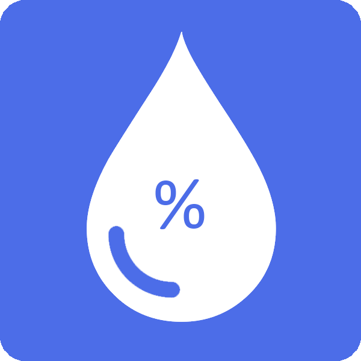
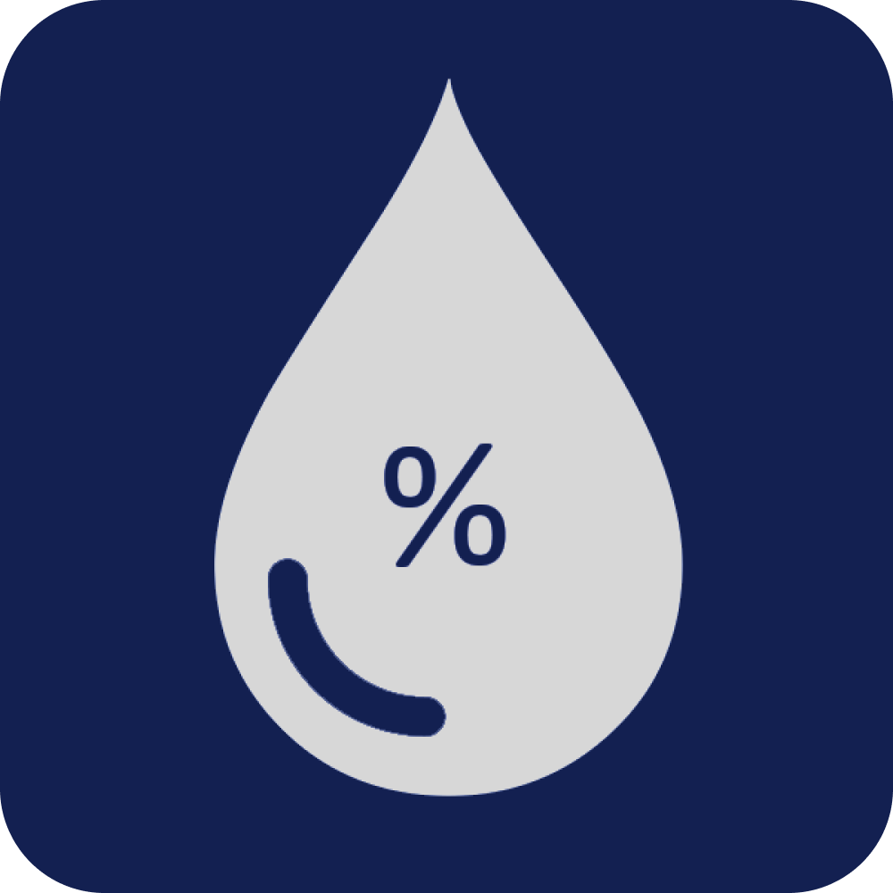
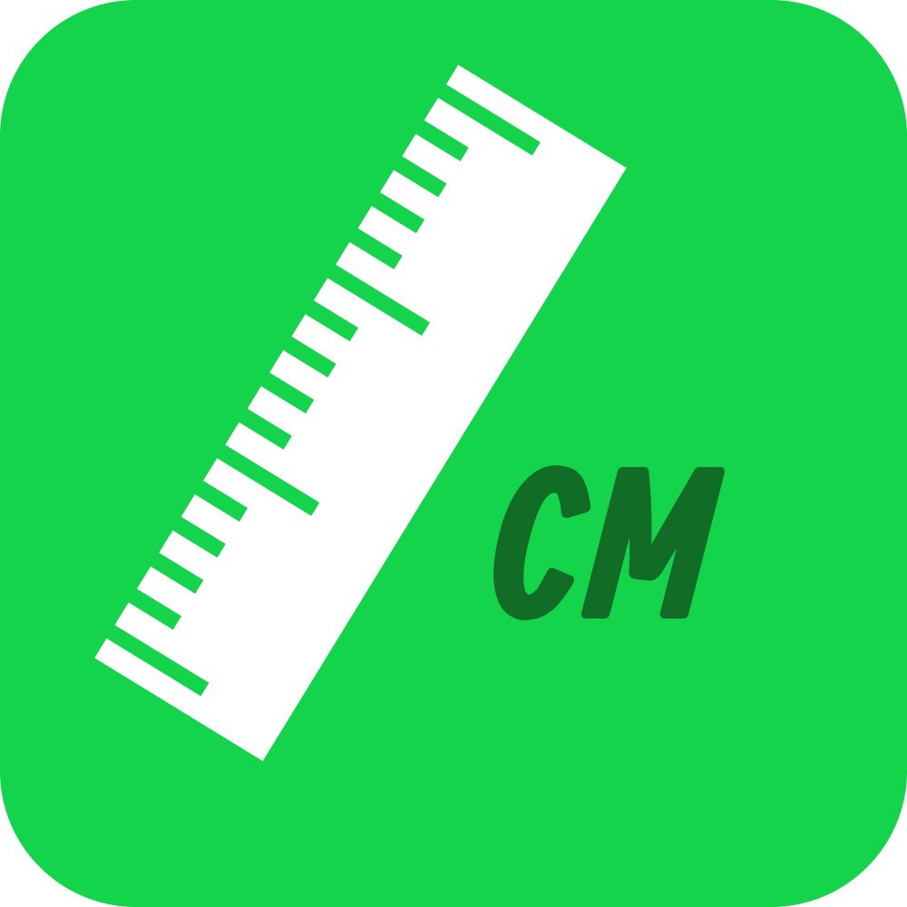
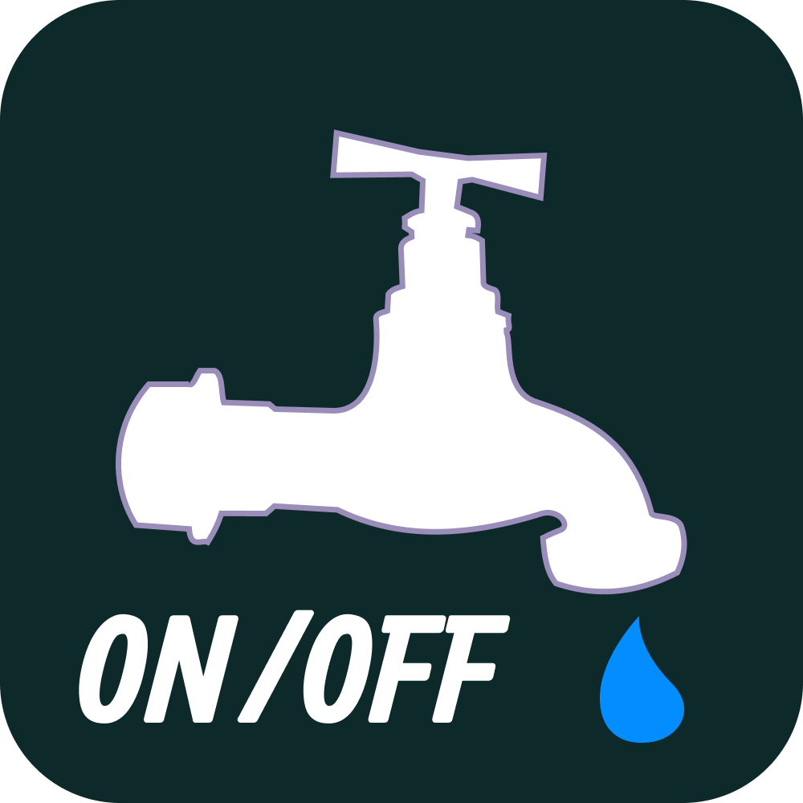

Agriculture is costly and crops on a field do not grow evenly. Farmers waste crucial resources such as water by applying them evenly throughout the field. Industrial soil moisture sensors are extremely costly, averaging $150 per unit. These costs reduce the number of sensors farmers can buy and place on their fields, creating gaps in insights that lead to little reduction, if any, in water use and management.
FarmGrid is an idea to create, install, and scale a grid of wireless sensors for real-time monitoring of critical field data, such as soil moisture and temperature, using bluetooth low energy and sourcing off-the-shelf parts. By doing so, FarmGrid aims to offer sensors that can last 1-2 years, consume 1/100th of the power, use a couple of batteries, and do so at 1/3rd of the cost of current sensors.
Above is a demo of the minimal viable product (MVP): a wireless device that measures light-intensity, soil-moisture,and is constructed from spare parts to minimize cost. The device is buried within a container filled with soil, and the data read from the device is sent wirelessly to the computer. Light and soil moisture levels are adjusted throughout the time lapse to show how the readings of the device change live! The orange line is light-intensity and the blue lines are soil moisture levels from two different readings. The MVP costs approximately $20 to build.
 0.00
 00.00
00.00
 00.00
 N/A